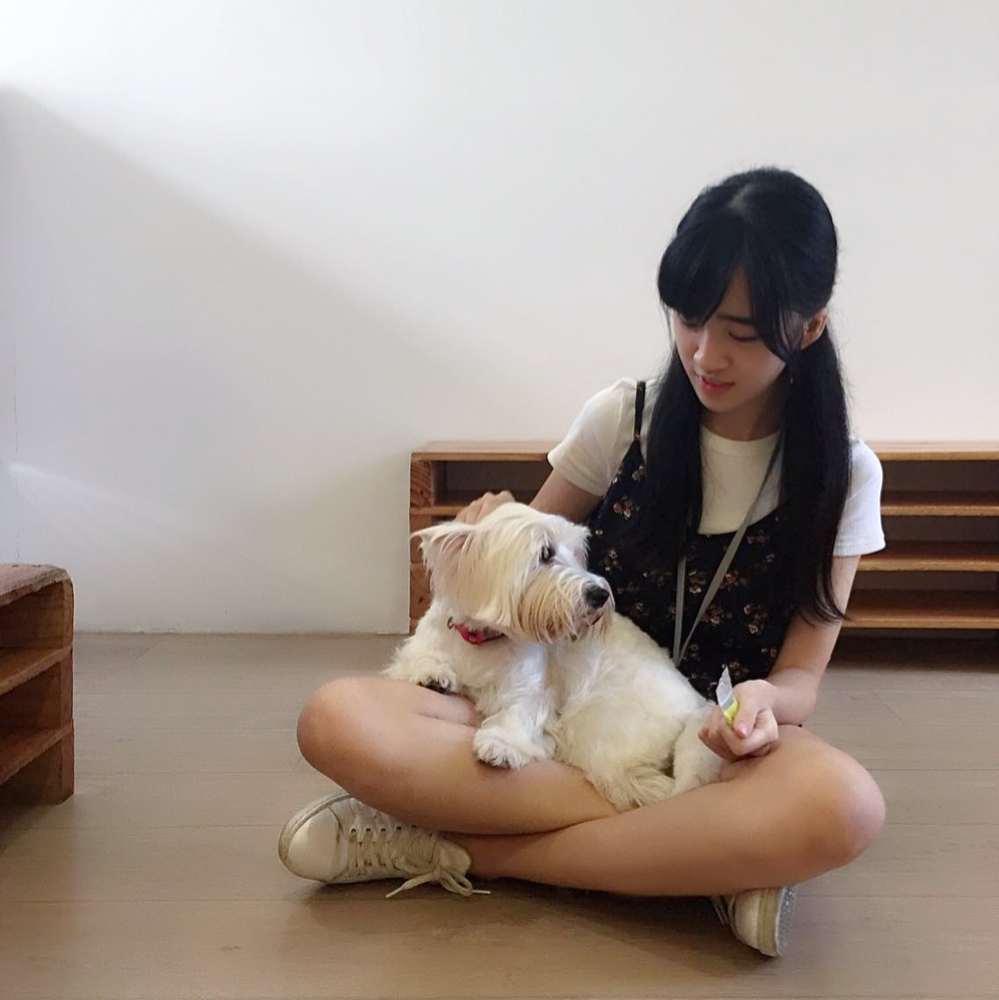

About me
Hi! My name is Celeste and I am from a sunny island called Singapore. I am 17 year old student, a first year student in Singapore Polytechnic. I have always love to travelling, especially being able to travel with my love ones. Travelling makes me feel alive and gives me freedom. Travelling also allows me to escape from the bustling city that I came from.
I am also very fond of photography. Hence, whenever I am travelling, I would always bring along my camera to capture all the beautiful moments during the journey. I have tons of images that I took for all myjourneys but I have never share it to the public. Therefore, I decided to create a website just to share all the images that i took during my trips to the world.


To know more about me, you can follow me on Instagram [@mineeee17] to see more photos of my daily life. For eny enquiries, you can email me at [celestekoh24@gmail.com]